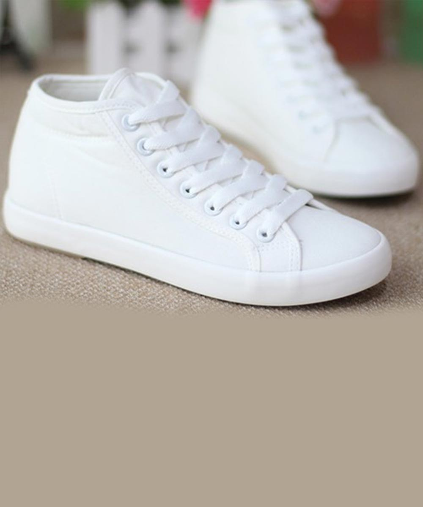

Image Identification App

Test Image - 
Output on Wolfram model - Bed room
Output on Mobilenet Model - Bed
Result - MobileNet is more accurate
Test Image - 
Output on Wolfram model - white shoes
Output on Mobilenet Model - shoes
Result -Wolfram is more accurate
Test Image -
Output on wolfram model - laptop
Output on Mobilenet Model - laptop
Result - Both are acurrate
Test Image - 
Output on wolfram model - watch
Output on Mobilenet Model - smart watch
Result - Mobilenet is more accurate
Test Image - 
Output on Wolfram model - Brown sofa
Output on Mobilenet Model - sofa
Result - wolfram is more accurate
Test Image -